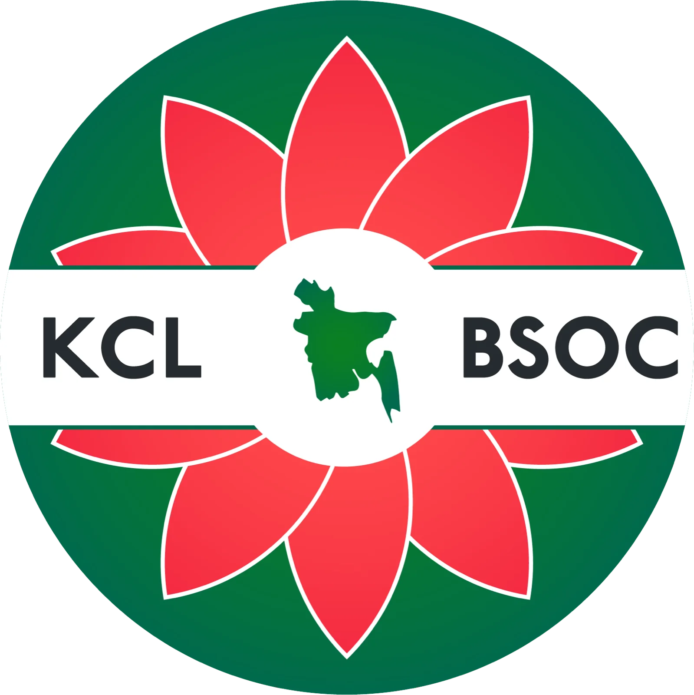
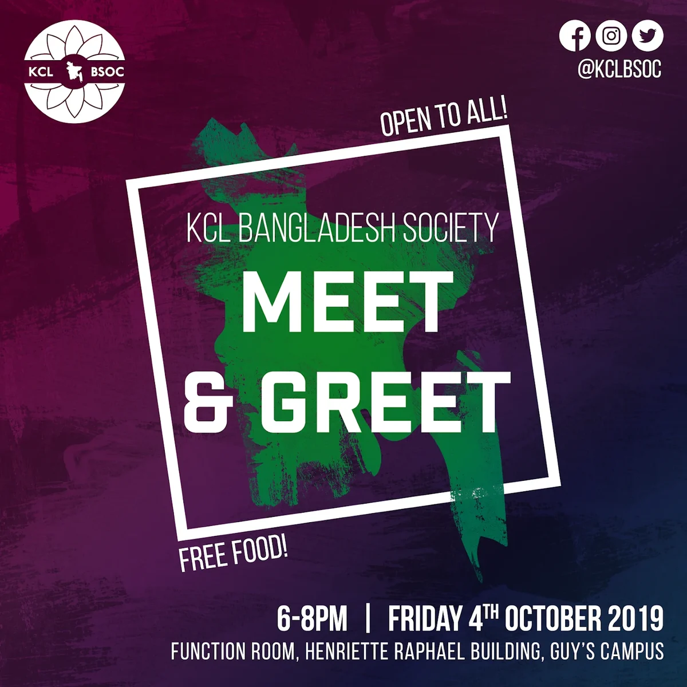
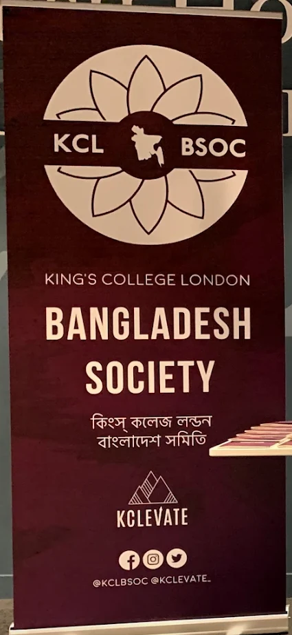

A case study · 2019 – 2020
KCL BSOC
A new mark for King’s College London Bangladesh Society, drawn the year I was its president.

Preface
A society needs a face
A student society’s logo works harder than most. It’s on every Instagram post, every poster on a noticeboard, the banner at freshers’ fair and, if it goes well, the hoodies people wear for years afterwards.
When I took over as president in September 2019, our logo couldn’t do most of that. So alongside running the society, I redrew it.
Part one
The mark
-
01
The old mark
The society’s logo was a circular stamp: an ornate ring, the name set around a curve and KCL in the middle. It had character, but it didn’t scale, there was no white version for dark backgrounds, it was hard to read, and it had so many elements that nobody could picture it from memory.
-
02
Write the brief
The new one had to carry the Bangladeshi flag, have some form of rotational symmetry and feature the shapla, the national flower. It had to scale down cleanly, be recognisable at a glance and print onto merch and posters in one colour.
-
03
Start from the flag
The flag is a red disc on a green field. Pull the field into a circle and bring the disc to the centre, and the palette and the outline are already decided.
-
04
Draw one petal
The shapla is a water lily. Each petal is a simple pointed curve, drawn once from the centre out to a guide circle.
-
05
Turn it ten times
Rotated around the centre in steps of 36 degrees, ten copies make the flower. That’s the rotational symmetry from the brief, and it comes straight from the shapla itself. Filled in the flag’s red on the flag’s green.
-
06
A band for the name
A white band runs across the middle for KCL and BSOC, set in a heavy geometric sans that stays legible when it’s small.
-
07
The country at the centre
Where the flag’s red disc sat, a white circle now holds the map of Bangladesh.
-
08
Make it work in one colour
Because it’s built from flat shapes, the whole mark becomes line art in a single colour: white on maroon, or maroon on white. That’s the version on the banner, the posters and the hoodies.
-
09
Test it small
Most people see a society’s logo as a profile picture. At that size the old stamp became a smudge. The new one still reads: a circle, a flower, a band.
Part two
In use
Merch
Hoodies
Maroon hoodies for the committee: the one-colour mark on the chest, the country on the back with a name and a role, and Bangla lettering down the sleeve.
Fig. 10 — Redrawn as flat illustrations from photos of the real hoodies
Posters and the banner
The one-colour version sat in the corner of every poster, so the society was recognisable before anyone read a word. The pull-up banner made it big.


Back to all work →“Design is thinking made visual.”
Saul Bass